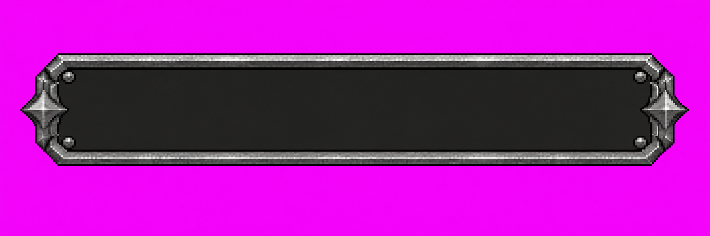
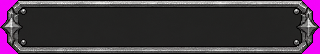
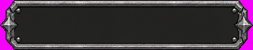

Fonte selecionada: DRAFT v03, direção visual aceita pelo dono em 15/10/2026. Fonte 2172×724, contorno detectado de 2046×346 (aproximadamente 5,91:1). Não é o asset final 320×64. Implementação e aceite no jogo ficam com a frente de Claude.

Somente diagnóstico: recorte pelo limiar de magenta e redução nearest-neighbor, mantendo o magenta. A primeira mantém a proporção detectada; a segunda ajusta para 320×64 para mostrar a possível mudança de forma. Não há alfa preparado, nove fatias ou montagem no Quartel.


v01: boa direção, mas 12 pixels não magenta nas bordas da imagem; retida. v02: margens corrigidas, mas variação de luminância central 8,6% da escala completa; retida. v03: mesmas características gerais com interior mais uniforme, variação de 3,28/255 (1,29%) na região central medida e zero pixels de contorno nas bordas externas.
Fonte v01 · Fonte v02Limitações: o teste de borda usa classificação ampla do magenta, não comprova ausência de halo fino. Medição central não substitui auditoria do interior inteiro. Faltam alfa definitivo, ajuste de proporção, fatias 28/28/20/20, tintas e teste de rótulo/glifo em jogo. O aceite registrado é somente da direção visual da fonte v03; o aceite em jogo continua pendente.